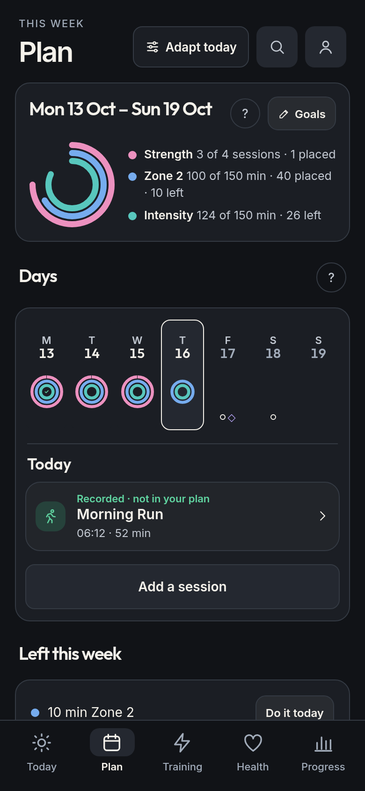
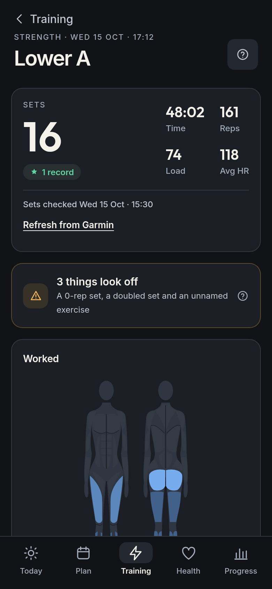
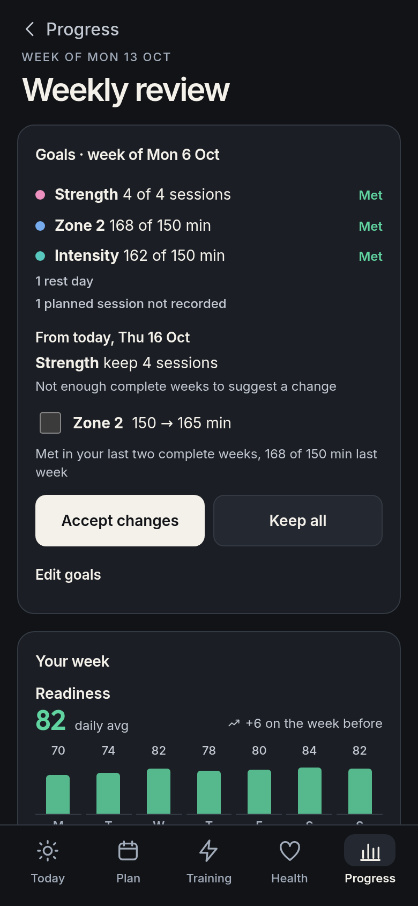

Android · Early release
A clearer view
of your day.
See how you slept, how ready you are and what today calls for, from Garmin’s own numbers. Set goals for the week, and your workouts count toward them as they sync.
Free to use. No subscription.
Open source. No ads. No telemetry.
- TodayThis morning’s answer
- PlanGoals for the week
- TrainingEnough, or too much?
- HealthSpot what’s off
- ProgressSee the weeks add up

What you get
Garmin’s numbers, made clear.
Raring shows Garmin’s own metrics, compares them with your usual ranges and your goals, and turns them into a simple call for the day. It doesn’t invent scores.
Today
Sleep, readiness, sleep heart rate and HRV in one row, a suggested effort for the day, and your whole day on one timeline.
Plan
Weekly goals for strength, Zone 2, Zone 4–5, intensity minutes and sleep timing, with sessions placed on the days that suit you.
Sleep
Score and stages against your usual nights, overnight HRV, heart rate, respiration and SpO₂, naps, and a plan for tonight.
Training
Acute load against Garmin’s optimal range, load focus, VO₂ max, race predictions and thresholds, plus zones and splits for your workouts.
Strength
Sets, reps and weights from your watch, sets that look miscounted, a body map of the muscles you’ve trained and your best lifts.
Health
Fitness Age and what would lower it, overnight vitals against your usual ranges, resting heart rate, stress, Body Battery and weight.
Progress
A weekly review every Monday, 12 weeks of goal rings, records and milestones, and monthly trends.
Adapt
Tell Raring you’re resting, ill, taking a break or working around an injury, and Today stops suggesting effort. A lighter week halves this week’s strength and zone targets.
On your phone
Home-screen widgets, an optional silent status notification, and reminders for readiness, wind-down and your weekly review.
Search finds pages, cards and Garmin metrics by name. Charts reach back through all your history, and Settings exports your downloaded Garmin data and Raring settings.
Plan
Plan the week. Your watch fills it in.
Choose goals for the week and place sessions on the days that suit you. As workouts sync, Raring matches them to your plan and counts them toward each goal.
- One ring per goal, filled only by what you recorded
- Workouts matched to planned sessions, and a question when it isn’t clear
- What’s left this week, with Do it today
- Garmin Coach and calendar workouts alongside your own

Sleep
See how last night set you up.
Garmin’s sleep score and stages, set against the sleep you need and your usual nights, with a plan for getting enough tonight.
- Time asleep against Garmin’s sleep need
- Each stage against your 30-night average
- Overnight HRV, heart rate, respiration and SpO₂
- A 24-hour clock for tonight’s wind-down, bedtime and wake

Training
Train enough, not too much.
See this week’s training against your goals and your usual week, and your recent load against Garmin’s optimal range.
- Zone 2 and strength against your goal and your usual week
- Training status, acute load and load focus, with shortages flagged
- VO₂ max, endurance and hill scores
- Race predictions, lactate threshold and FTP

Workouts
Know what each workout did.
Open any activity for the load it added, what it trained and how it counted toward your week. Strength workouts show every set your watch recorded.
- Training Effect, heart-rate zones, splits and route
- Sets, reps and weights, against last time
- Sets that look miscounted, flagged for a check
- Your best lift at each rep count, and the muscles you’ve trained

Health
Notice when something’s off.
Fitness Age shows where you stand and what would move it. Each overnight reading sits against your own usual range, so an unusual night stands out.
- Fitness Age, and the change that would lower it most
- Sleep heart rate, HRV, respiration, SpO₂ and skin temperature against your usual ranges
- Resting heart rate, stress, Body Battery and weight, from a week to a year
- A heads-up when two or more readings are outside your usual range

Progress
Look back on every week.
Each Monday brings a review of the week just ended: the goals you met, your readings against the week before, and proposed goals for the week ahead to accept or keep.
- Goals met, and why a week didn’t count
- Your goals change only when you accept a proposal
- Goal rings for the last 12 weeks, records and milestones
- Training, resting heart rate, HRV, VO₂ max and Fitness Age by month

The connection, explained
Keep Garmin Connect in the loop.
Raring connects to your Garmin account, not directly to your watch. It gives the data already in Garmin a different view.
Sync your watch
Keep Garmin Connect installed and let it sync your watch with Garmin. Raring can only show data that has reached your account.
Sign in with Garmin
Use Garmin’s own sign-in page inside Raring. There’s no new Raring account, and Raring doesn’t read or store your Garmin password.
See your day clearly
Raring downloads your data to your phone and checks for updates in the background. The first sync can take several minutes, and older history follows. Your last synced view is available offline.
Some watches also upload over Wi-Fi or through Garmin Express. What matters is that your data reaches Garmin first. Metrics vary by watch; Raring doesn’t invent missing scores.
Private by design
Your phone. Your data.
The app talks directly to Garmin. Your downloaded history, goals and plans stay on your phone—not on a Raring server. We don’t collect your health data or track how you use the app.
Read the privacy details- No analytics or telemetry
- No ads or tracking SDKs
- No separate Raring account
- Open source, so you can check
Ready when you are
Get Raring. It’s free.
This is an early release for Android 7 or later on arm64 phones. You’ll need a Garmin account with synced watch data. Raring isn’t in the app stores.
Open the latest release